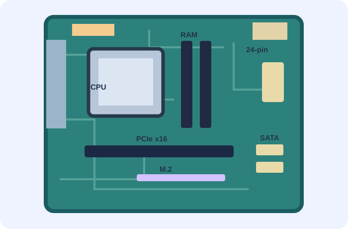

08 Moderkort, grafik och anslutningar
Moderkort, grafik och anslutningar.
Genomgång + övningar + powerpoint inlämning.
Så arbetar du
Börja med bildspelet och arbeta sedan igenom uppgifterna i ordning. Du får återkoppling på dina svar och kan göra om uppgifterna.
Dina svar sparas lokalt i den här webbläsaren. Exportera svaren innan du avslutar.
Lektionens moment
Presentation
Dagens genomgång
02Moderkortsdetektiven
Identifiera åtta delar på ett moderkort.
03Anslut rätt
Matcha enheter, kontakter och funktioner.
04Vilken grafik?
Välj rätt grafiklösning utifrån användarens behov.
05Felsökningsverkstad
Hjälp med att lösa problemet
06Sant eller falskt?
Avslöja vanliga missuppfattningar om datorns delar.
07IT-teknikern
Hjälp fyra kunder att välja lämplig datorutrustning.
08Datorns signalväg
Placera stegen i rätt ordning och förstå hur datorn arbetar.
09Moderkortets kommunikation
Utforska en interaktiv modell av datorns komponenter.
10USB-laboratoriet
Beräkna filöverföringstider och jämför USB-standarder.
11PCIe-laboratoriet
Undersök hur PCIe-generation och antal banor påverkar bandbredden.
12Energi och hållbar IT
Beräkna datorns energianvändning och elkostnad.
13IT-säkerhet vid anslutningar
Fatta säkra beslut om USB-enheter och externa anslutningar.
14Moderkortsuppdraget
Undersök kontakter och välj kompatibla komponenter för cirka 6 000 kr.
15Grafikkortsprojektet
Arbeta i par, jämför fem grafikkort och skapa en egen presentation.
